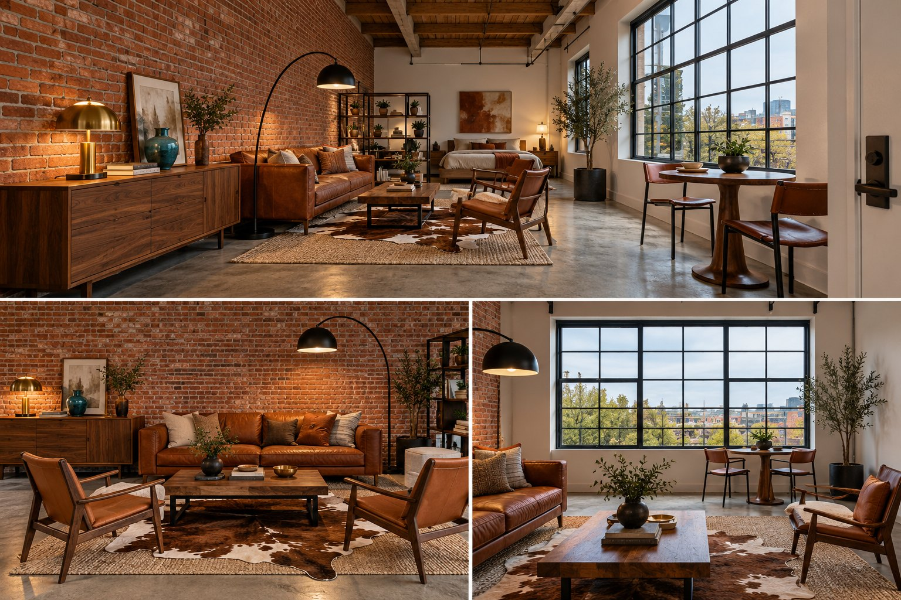
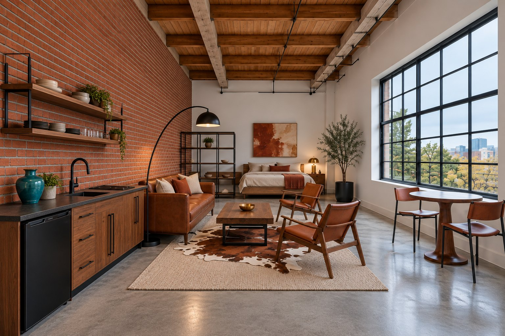

Case study · Prompt architecture · App concept
A repeatable system for AI interior design
Image models redesign the room every time you ask. This system fixes the room first, writes a structured brief, prompts from it, and scores every render against it. Tested end to end on a 320 sq ft brick-and-timber loft.
The problem
Ask an image model for a room three times and you get three rooms
The first attempt asked for three views of the loft on one canvas. The model redesigned the space in each panel.

Geometry drifts
- A second window appeared
- A door showed in a view where it should be behind the camera
- Brick moved to the west wall in one panel
Light drifts
- Golden-hour orange cast instead of 10:30 AM north light
- Ceiling and beams cropped out of two views
Details drift
- Jute-textured rug, stray pillows, nightstands, a pouf
- The olive tree switched sides between views
Better adjectives did not fix this. A process did: fix the room first, specify every piece, and score each render against the brief.
Part 1
The system
Four steps and a reusable template. Each one exists because of a failure in the first render.
Step 1 · Lock the room
Fixed facts come from the floor plan, not from the model
Give the system a floor plan, blueprint, survey, or CAD export (image or PDF) and it extracts the fixed facts instead of asking for them. With no plan, they are typed in or measured. Either way, every fact is labeled as read from the plan, calculated, or assumed.
- Set the scaleRead a scale bar, a stated scale, or one labeled dimension. Scale is never inferred from furniture.
- Extract the fixed factsRoom dimensions, wall thickness, door and window positions from a named corner, plumbing and electrical, columns, stairs, and finishes from the legend. Ceiling height is often missing from plans, so sections and notes are checked.
- Label every factRead from the plan, calculated, or assumed. Only critical gaps get a question: north orientation, ceiling height, sill height, which wall is brick.
- Cross-checkDimensions add up, openings fit their walls, and the plan agrees with the description. Conflicts are settled before any image is generated.
- Convert to coordinates and textOne origin and one set of axes for every piece and camera. The plan goes into the prompt as words, because image models do not follow drawn plans reliably.
Plans can carry addresses, names, and permit numbers. Redact them before a plan is shown publicly.
Step 2 · Write the brief
Six pillars, filled in before any image is generated
Shown here with the loft's values.
Fixed facts
Dimensions, ceiling, window, walls, floor, openings and services. Typed in, measured, or extracted from an uploaded floor plan. Treated as unchangeable across every prompt.
Style ratio
60% Mid-Century Modern, 25% Industrial, 15% Western Americana. The industrial share comes from the building. The Western share is carried by material only: saddle leather, cowhide, aged brass.
Palette tied to light
North light is cool and flat, so the palette runs warm: cognac, burnt sienna, saddle tan, oatmeal, walnut, aged brass, with 2700K lamps as the only warm pools.
Key pieces
Every piece is written as material plus placement, for example "84-inch cognac top-grain leather sofa centered on the brick wall facing the window."
Constraints and exclusions
Renter-friendly, freestanding, moderate budget. No chrome or stainless, no barn wood, no animal skulls, no striped patterns, no upper cabinets or open kitchen shelving.
Output specification
5-ft eye level, 24 mm wide angle, f/8, straight verticals, 3:2, one image per generation, plus a room-zone text brief and a shopping table.
Step 3 · Prompt from the brief
Six rules for prompts that hold the room steady
Each rule exists because a render broke it. Examples are from the loft.
- Lock the shell firstGenerate the empty loft, then reuse its architecture block word for word in every "after" prompt. Consistency comes from repetition, not from asking the model to remember.
- Write material and placement, not nouns"A leather sofa" produces any sofa. "84-inch cognac top-grain leather sofa with tapered walnut legs, centered on the brick wall" produces a checkable one.
- Tie the palette to the lightThe window faces north, so daylight is cool. The prompt states that and names the warm counter-palette and bulb temperature, which also stopped the model from defaulting to golden hour.
- Spell out orientationEach shot line names which wall is on the left and right and what is behind the camera. The first render put brick on the wrong wall and a door in view until these were added.
- Name what must not appearNegative constraints came from reading failures: exactly one window, no pouf, no striped pillows, no stainless. Each is a line that exists because a render broke the rule.
- One image per generationThe first attempt asked for three views in one collage and the model reinvented the room per panel. Generating A1 alone, then using it as a reference for the other views, keeps the room stable.
Step 4 · Audit the render
Score every render against the brief, then patch
Each pillar becomes yes-or-no checks. A check scores 1 if the render matches, 0.5 if it partly matches, and 0 if it does not. The review is manual and visual, not a pixel measurement. The style ratio is a judgment call and is not scored, and true dimensions cannot be read from a render, so placement and relative scale are checked instead.
- Break the brief into checksOne check per specified fact: exactly one window, brick on the south wall only, a walnut slab coffee table with a black steel base.
- Score the render and record each missThe result is a score per pillar and a list of what failed, so the next change is targeted.
- Fix the prompt or the briefRendering errors become new prompt lines. Design problems, such as two lamps stacked at one end or a console with no purpose, change the brief itself.
Template
The reusable brief
Fill this in once per project and reuse it verbatim for every image. Download template.md
Six-pillar interior design brief
### [Project Name / Concept Title] #### 1. Fixed Facts (Ground Truth) * Dimensions & Layout: [e.g., studio loft, 16x20 ft] * Ceiling & Architecture: [e.g., 12-ft timber-beam ceiling, large factory window facing north] * Walls & Flooring: [e.g., exposed red brick, polished concrete floors] * Openings & Services: [door and window positions from a named corner; plumbing and electrical locations] * Source: [floor plan upload, measured, or assumed; mark each fact [plan], [calc], or [assumed]] #### 2. Style Ratio * Breakdown: [e.g., 70% Mid-Century Modern, 20% Western Americana, 10% Industrial] #### 3. Palette Tied to Light * Light Adaptation: [e.g., countering cool north light with warm earth tones] #### 4. Key Pieces (Material + Placement) * Seating: [e.g., cognac top-grain leather sofa against the brick wall] * Textiles: [e.g., brown-and-white cowhide layered under the coffee table] * Lighting & Decor: [e.g., matte black iron arc lamp over the seating zone] #### 5. Constraints and Exclusions * Constraints: [e.g., renter-friendly, moderate budget] * Exclusions: [e.g., no faux-rustic clutter, no chrome finishes] #### 6. Output Specification * Image Prompt Specs: [e.g., 5-foot eye level, wide angle, late-afternoon golden hour] * Text Brief Format: [e.g., room zones + markdown shopping table]
Part 2
Case study: the Brick & Saddle Loft
The system applied to a 16 x 20 ft brick-and-timber loft, from the empty shell to a shoppable final render.
Case study · Before
The shell: ground truth that never changes
The empty loft is specified first. The same architecture block opens every "after" prompt, so only the furnishings change between renders.
- Footprint
- 16 x 20 ft open studio, long axis east to west
- Ceiling
- 12 ft, exposed rough-sawn timber beams at 4 ft spacing, black conduit
- North wall
- One 12 x 8 ft black steel factory window, 12-pane grid, cool daylight
- South wall
- Original red brick, uneven mortar, soft patina
- East and west walls
- Flat white drywall, 6-inch baseboard. Door on the east wall
- Floor
- Polished light grey concrete with trowel marks
- Plumbing
- Capped supply and drain stubs on the south wall, about 30 in. from the east wall (added when the kitchenette replaced a console)
- Light
- Neutral-cool, about 6000 to 6500K, bright overcast, 10:30 AM
This shell was written from a description, not a drawing.
Case study · The look
Hover, tap, or tab to the dots to see what to buy
Each marker opens the piece's specification and the suggested product to shop for. Colored markers have a sourced product. Grey markers are specified but not sourced yet.

View A1: camera at the east wall looking west, 5-ft eye level, 24 mm. The brick south wall is on the left and the north window is on the right.
Case study · Prompts
The loft's prompts, word for word
The shell block is reused verbatim in every prompt. Only the shot line changes between views.
Locked "before" prompt (empty shell)
Architecture & Ground Truth: Empty 16x20 ft open studio loft, 12 ft ceiling with exposed rough-sawn timber beams running north-south at 4 ft spacing. North wall: one large black steel-framed factory window, 12 ft wide x 8 ft tall, 12-pane grid, sill 2.5 ft above floor. South wall: original red brick, uneven mortar, soft patina. East and west walls: matte white painted drywall, 6-inch painted baseboard. Floor: polished concrete, light grey, subtle trowel marks and hairline cracks. Black conduit along the ceiling beams. Two capped copper water supply stubs and one capped drain stub emerge from the south brick wall about 30 inches from the east wall, 6 inches above the floor, with one exposed outlet box beside them. Completely empty, no furniture, no decor, no people. Palette & Lighting: Cool, diffuse north daylight (about 6500K) through the window, 10:30 AM, soft shadows with no direct sun. Brick reads warm against the cool light. Camera & Output: 5-foot eye-level camera, 24mm full-frame wide-angle lens, f/8, vertical lines kept straight, hyper-realistic textures, architectural editorial photography, 3:2 aspect ratio. Shot B1: Camera position: standing at the east door, looking west. Brick wall on the left, window wall on the right, white west wall at the far end. Shot B2: Camera position: standing 2 ft from the window wall, looking south. Brick wall fills the frame, ceiling beams visible overhead. Shot B3: Camera position: standing 2 ft from the brick wall, looking north. The factory window is centered and the light falls across the concrete.
Final "after" prompt (v3)
Architecture & Ground Truth: 16x20 ft open studio loft, 12 ft ceiling with exposed rough-sawn timber beams at 4 ft spacing and black ceiling conduit. Exactly ONE window in the whole room: the 12-pane black steel window on the north wall, 12 ft wide x 8 ft tall. Only door is on the east wall, never visible in shots looking west. Brick appears ONLY on the south wall; east, west and north walls are flat white drywall with 6-inch baseboard. Floor: polished light grey concrete. Style Ratio & Core Pieces: 60% Mid-Century Modern, 25% Industrial, 15% Western Americana. Kitchenette along the south brick wall at the east end: 60-inch walnut-fronted base run, black steel pulls, honed charcoal counter, matte black bar sink with gooseneck faucet, matte black 24-inch under-counter fridge, plug-in two-burner induction cooktop, one turquoise ceramic vessel; bare brick above, no upper cabinets, no open shelving. Living zone: 84-inch cognac top-grain leather sofa with walnut legs centered on the brick wall facing the window, 3 solid pillows (two oatmeal, one burnt sienna); 48-inch walnut slab coffee table with black steel base holding one low brass bowl; tightly woven natural oatmeal wool flat-weave rug, flat pile, no jute texture, with a brown-and-white cowhide layered on top; one saddle-tan leather sling chair with walnut frame at each end of the coffee table, angled 30 degrees toward the sofa; matte black iron arc floor lamp arching over the sofa's east end. Dining: 42-inch round walnut pedestal table with two black steel and saddle-leather chairs at the east end of the window. Sleeping zone at the west end: low walnut platform bed, headboard on the west wall, oatmeal linen, burnt-sienna throw, one small walnut bedside table with an aged-brass lamp, rust-and-sand abstract canvas above the bed, 5-foot open walnut and black steel shelf divider with only a few objects, offset from the bed's foot. One 7-foot olive tree in a matte black planter at the west end of the north wall. Curated and sparse. No stainless or chrome, no faux-rustic decor, no barn wood, no animal skulls, no pouf, no books, no striped patterns. Color Palette & Lighting: neutral-cool daylight white balance (~6000-6500K) on concrete and white walls, bright overcast 10:30 AM. Only the arc lamp and brass lamp cast small 2700K warm pools. Not golden hour, no orange color cast. Warm cognac, burnt sienna, saddle tan, oatmeal, walnut, aged brass. Camera & Output Specs: 5-foot eye-level, 24mm full-frame wide-angle, f/8, straight verticals, ceiling beams visible, hyper-realistic leather, walnut and brick texture, architectural editorial photography, 3:2. One image per generation. Shot A1: Camera at the east wall looking west. Brick wall and kitchenette on the LEFT, window wall on the RIGHT, bed zone at the far end.
Case study · Results
How closely the final render follows the brief
Scored with the audit method above, on one view (A1) of the final render.
| Pillar | Checks | Score | Misses |
|---|---|---|---|
| 1 Fixed facts | 8 | 7.5 | Window grid reads denser than the specified 12 panes |
| 3 Palette and light | 4 | 3.5 | Time of day could pass for late afternoon |
| 4 Key pieces | 20 | 18.5 | Sling chairs stacked on one side of the table instead of flanking it. Rug still reads textured |
| 5 Constraints and exclusions | 7 | 5.5 | Wall-mounted open shelving and dishes appeared over the counter, which the brief excludes. Extra plants |
| 6 Output specification | 5 | 5 | None |
| Total | 44 | 40 (91%) | Pillar 2, the style ratio, is a judgment call and is not scored |
Three iterations
Three views on one canvas
- A second window appeared
- A door showed in a view where it should be behind the camera
- Brick appeared on the west wall in one panel
- Golden-hour orange cast instead of 10:30 AM north light
- Jute rug, stray pillows, nightstands, a pouf

Prompt patched
- One window, no door, neutral light, beams visible
- Extras removed
- Design flaw found in the audit: a table lamp and a floor lamp stacked at one end of the brick wall, beside an arbitrary console

Brief revised
- Console replaced by a kitchenette, which gives the entry end a purpose and removes the lamp stack
- Brass lamp moved to the bedside
- Still open: sling-chair placement, open shelving over the counter, rug texture

Only view A1 has been generated and scored for v3. Views A2 and A3 still need to be regenerated from the final prompt and audited the same way.
Case study · Shopping list
Suggested pieces
| Zone | Piece | Suggested product | Listed price |
|---|
Next
From a skill to an app
Today the system runs as a Claude skill plus the template above. The app would make it usable by anyone with a room to design.
What exists
- Six-pillar brief as a reusable skill
- Floor-plan intake workflow
- Manual scored audit
- Hover-to-shop overlay on this page
Inputs
- Home type: apartment or single-family house
- Square footage, natural light and orientation
- Materials: exposed brick, beams, tile or boards
- Furniture, fixtures, lighting
- Floor plan and the owner's own inspiration images
- Any style, blended by ratio
Review and output
- AI architect, contractor, and designer reviews of the layout and commonly overlooked items
- A simple, minimal PDF lookbook with aerial-to-eye-level views of each room
- A shopping list per room
The app is a concept and is not built. The audit is still done by hand, so automating it is the open problem.